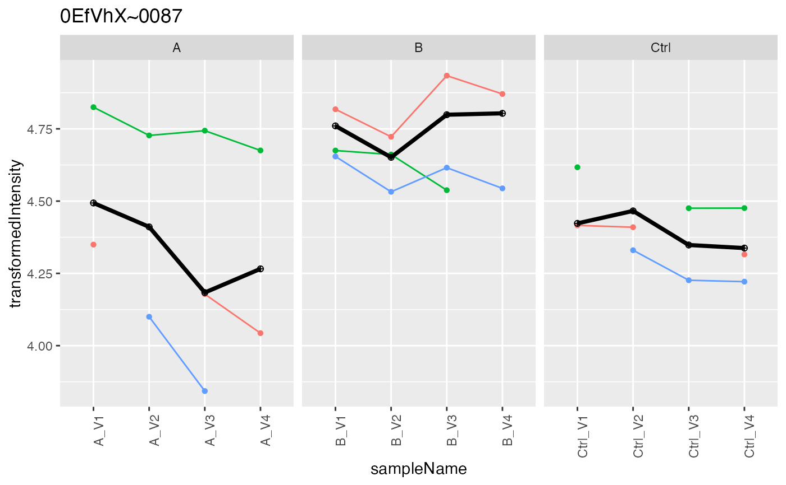

Decorates LFQData with methods to aggregate protein intensities
Source:R/LFQData.R
LFQDataAggregator.RdDecorates LFQData with methods to aggregate protein intensities
Decorates LFQData with methods to aggregate protein intensities
Details
aggregates intensities
Public fields
lfqLFQData
lfq_aggaggregation result
prefixto use for aggregation results e.g. protein
Methods
Public methods
Method new()
initialize
Usage
LFQDataAggregator$new(lfq, prefix = "protein")
Arguments
lfqLFQData
prefixdefault protein
Method medpolish()
aggregate using median polish
Usage
LFQDataAggregator$medpolish()
Arguments
Ntop N by intensity
Returns
LFQData
Method lmrob()
aggregate using robust regression
Usage
LFQDataAggregator$lmrob()
Arguments
Ntop N by intensity
Returns
LFQData
Method mean_topN()
aggregate topN using mean
Usage
LFQDataAggregator$mean_topN(N = 3)
Arguments
Ntop N by intensity
Returns
LFQData
Method sum_topN()
aggregate topN using sum
Usage
LFQDataAggregator$sum_topN(N = 3)
Arguments
Ntop N by intensity
Returns
LFQData
Method plot()
creates aggreation plots
Usage
LFQDataAggregator$plot(show.legend = FALSE)
Arguments
show.legenddefault FALSE
Returns
data.frame
Method write_plots()
writes plots to folder
Usage
LFQDataAggregator$write_plots( qcpath, show.legend = FALSE, width = 6, height = 6 )
Arguments
qcpathqcpath
show.legendlegend
widthfigure width
heightfigure height
Returns
file path
Method clone()
The objects of this class are cloneable with this method.
Usage
LFQDataAggregator$clone(deep = FALSE)
Arguments
deepWhether to make a deep clone.
Examples
#>data <- istar$data %>% dplyr::filter(protein_Id %in% sample(protein_Id, 100)) lfqdata <- LFQData$new(data, istar$config) lfqTrans <- lfqdata$clone()$get_Transformer()$log2_robscale()#>#>lfqAggregator <- LFQDataAggregator$new(lfqTrans, "protein") lfqAggregator$medpolish()#>#> Warning: medpolish() did not converge in 10 iterationspmed <- lfqAggregator$plot() pmed$plots[[2]]#> Warning: Removed 54 rows containing missing values (geom_point).#> Warning: Removed 14 row(s) containing missing values (geom_path).lfqAggregator$lmrob()#>#> Warning: 'rlm' failed to converge in 20 steps#> Warning: 'rlm' failed to converge in 20 steps#> Warning: 'rlm' failed to converge in 20 steps#> Warning: 'rlm' failed to converge in 20 stepsprob <- lfqAggregator$plot() prob$plots[[2]]#> Warning: Removed 54 rows containing missing values (geom_point).#> Warning: Removed 14 row(s) containing missing values (geom_path).lfqCopy <- lfqdata$clone() lfqCopy$is_transformed()#> [1] FALSElfqAggregator <- LFQDataAggregator$new(lfqCopy, "protein") lfqAggregator$sum_topN()#>#>pSum <- lfqAggregator$plot() pSum$plots[[2]]#> Warning: Transformation introduced infinite values in continuous y-axis#> Warning: Transformation introduced infinite values in continuous y-axis#> Warning: Removed 54 rows containing missing values (geom_point).#> Warning: Removed 14 row(s) containing missing values (geom_path).lfqAggregator$mean_topN()#>#>pMean <- lfqAggregator$plot() pMean$plots[[2]]#> Warning: Removed 54 rows containing missing values (geom_point).#> Warning: Removed 14 row(s) containing missing values (geom_path).#> Warning: Removed 1 row(s) containing missing values (geom_path).#> Warning: Removed 1 rows containing missing values (geom_point).# lfqAggregator$write_plots(".") protPlotter <- lfqAggregator$lfq_agg$get_Plotter() protPlotter$heatmap()